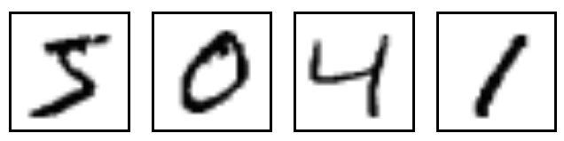
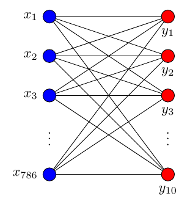
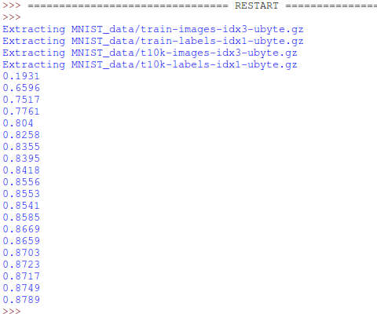

Classification 分类学习
作者: Mark JingNB 编辑: 莫烦
学习资料:
这次我们会介绍如何使用TensorFlow解决Classification（分类）问题。 之前的视频讲解的是Regression (回归)问题。 分类和回归的区别在于输出变量的类型上。 通俗理解定量输出是回归，或者说是连续变量预测； 定性输出是分类，或者说是离散变量预测。如预测房价这是一个回归任务； 把东西分成几类, 比如猫狗猪牛，就是一个分类任务。
MNIST 数据
首先准备数据（MNIST库）
from tensorflow.examples.tutorials.mnist import input_data
mnist = input_data.read_data_sets('MNIST_data', one_hot=True)
MNIST库是手写体数字库，差不多是这样子的

数据中包含55000张训练图片，每张图片的分辨率是28×28，所以我们的训练网络输入应该是28×28=784个像素数据。
搭建网络
xs = tf.placeholder(tf.float32, [None, 784]) # 28x28
每张图片都表示一个数字，所以我们的输出是数字0到9，共10类。
ys = tf.placeholder(tf.float32, [None, 10])
调用add_layer函数搭建一个最简单的训练网络结构，只有输入层和输出层。
prediction = add_layer(xs, 784, 10, activation_function=tf.nn.softmax)
其中输入数据是784个特征，输出数据是10个特征，激励采用softmax函数，网络结构图是这样子的

Cross entropy loss
loss函数（即最优化目标函数）选用交叉熵函数。交叉熵用来衡量预测值和真实值的相似程度，如果完全相同，它们的交叉熵等于零。
cross_entropy = tf.reduce_mean(-tf.reduce_sum(ys * tf.log(prediction),
reduction_indices=[1])) # loss
train方法（最优化算法）采用梯度下降法。
train_step = tf.train.GradientDescentOptimizer(0.5).minimize(cross_entropy)
sess = tf.Session()
# tf.initialize_all_variables() 这种写法马上就要被废弃
# 替换成下面的写法:
sess.run(tf.global_variables_initializer())
训练
现在开始train，每次只取100张图片，免得数据太多训练太慢。
batch_xs, batch_ys = mnist.train.next_batch(100)
sess.run(train_step, feed_dict={xs: batch_xs, ys: batch_ys})
每训练50次输出一下预测精度
if i % 50 == 0:
print(compute_accuracy(
mnist.test.images, mnist.test.labels))
输出结果如下：

有没有很惊讶啊，如此简单的神经网络结构竟然可以达到这样的图像识别精度，其实稍作改动后，识别的精度将大幅提高。 请关注后续课程哦。
如果你觉得这篇文章或视频对你的学习很有帮助, 请你也分享它, 让它能再次帮助到更多的需要学习的人. 莫烦没有正式的经济来源, 如果你也想支持 莫烦Python 并看到更好的教学内容, 赞助他一点点, 作为鼓励他继续开源的动力.